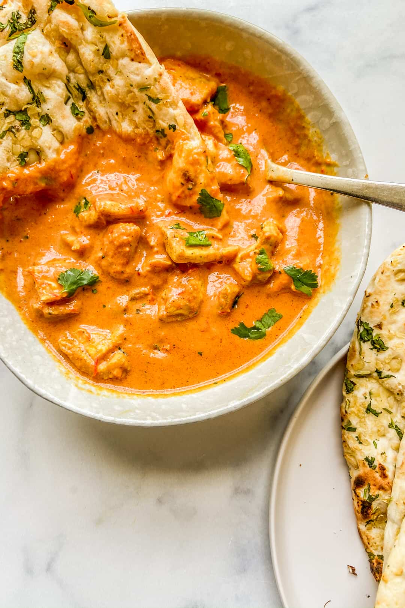

Tikka Masala

Best Tikka Masala Ever
Here is a recipe for the best Chicken Tikka Masal on the planet!
Ingredients
- 2 shallots, peeled
-
2-inch piece ginger, peeled
-
4 cloves garlic, peeled
-
1/2cup water, divided
-
1 & 1/2 pounds boneless skinless chicken breasts, cut into 1-inch cubes
-
3 teaspoons kosher salt, divided
-
3 teaspoons garam masala, divided
-
2 tablespoons vegetable oil, divided
-
2 teaspoons ground turmeric
-
1 teaspoon ground black pepper
-
1/4 teaspoon cayenne
-
1 tablespoon tomato paste
-
1 (14-ounce) can crushed tomatoes
-
1/2 cup heavy cream
-
optional for topping - chopped fresh cilantro
Instructions
- Blend the shallots, ginger, garlic, and ¼ cup water together in a blender or food processor to create a thick paste. If it’s not coming together, add up to another ¼ cup of water.
- Toss the chicken with 2 teaspoons kosher salt and 2 teaspoons garam masala.
- Heat 1 tablespoon of vegetable oil in a large pot or dutch oven over medium-high heat. When the oil is hot, add the chicken and cook for 3 to 5 minutes or until browned. Remove and set aside.
- Heat the remaining tablespoon of vegetable oil over medium-high heat in the same pot and add the shallot mixture. Cook for 3 minutes, stirring occasionally. Then add the remaining teaspoon of salt, remaining teaspoon garam masala, turmeric, black pepper, and cayenne, and let cook, stirring often, for 1 minute.
- Add the can of tomatoes, tomato paste, and ¼ cup water to the pot and stir to combine. Add the chicken back to the pot and bring to a low simmer. Reduce the heat and allow to simmer for 10 minutes.
- Remove from heat and stir in the heavy cream.
- Serve topped with cilantro and alongside naan bread or rice.